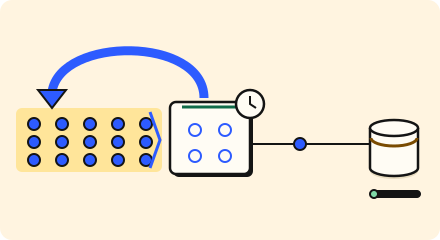

Scale the front · 3 minutes
Remembering answers
A cache keeps recent answers in memory so the database is asked less.
Open this lesson
The same question again
Most people ask for the same few things: today's top stories, a popular profile. Asking the database each time repeats work. A cache keeps the last answer in fast memory and hands it back.
Fresh versus fast
Fill the cache, change the original, then read again. A TTL bounds how long this cached answer can survive without invalidation.
Try the idea
The database is nearly full. Repeated answers may be at most 60 seconds old. Reduce its load while keeping that freshness limit.
Key numbers
- Memory read
- ≈ 0.5 ms. in-zone cache, approx.
- Database read
- ≈ 5 ms. approx.
- Typical hit rate
- ≈ 85 to 95 percent. for read-heavy data, approx.
Check your reasoning
Think through these questions before opening the lesson. In the game you can test the idea and compare your reasoning.
- A cache answers 90 percent of questions. How much work reaches the database?
- What is the cost of a long TTL?
- Which data suits caching best?
The key point
A cache trades a little freshness for a lot of speed and a calmer database.
Practise this idea
- Easy
URL shortener
People paste a long web address and get back a short one. Millions of other people then tap that short link, so reading is almost everything. Keep every tap fast, and never lose a link.
- Medium
Search autocomplete
As people type, they expect suggestions after every letter, in the blink of an eye. Most people type the same popular beginnings. When news breaks, one phrase suddenly dominates.
- Easy
News site
You run a news site. Millions read the same few stories, and when something big happens almost everyone opens the same page in the same minute. Editors publish all day, and readers expect fresh headlines.
- Medium
Music streaming
People search for songs, build playlists and press play. The audio is the heavy part, and a hit song is played by millions at once. Playback must not stutter, even when part of your system fails.